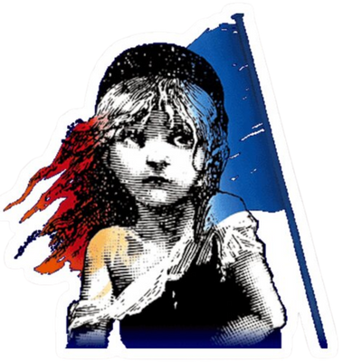

Themes and Relevancy
The theme of Les Miserables is primarily focused on the worth of a person's dignity. it discusses how, no matter how much people label or dehumanize us, we can still grow, change, and prove ourselves deserving of love.
The story follows a more character-focused structure, honing in on their hardships and how they fight against society's oppressive natures inflicted on them. All of the characters struggle in some way with their past or their identities as human beings, but in the end they learn to accept their worth.
Despite being set in Revolutionary France, the concept of accepting ourselves and moving past our murky history is especially relevant today. many youths struggle to figure out who they are and what they can do for the community, and Les Miserables offers a beautiful story on different ways to figure out your real worth as a person.
- 